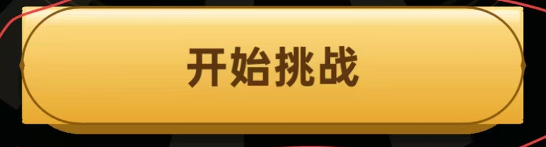
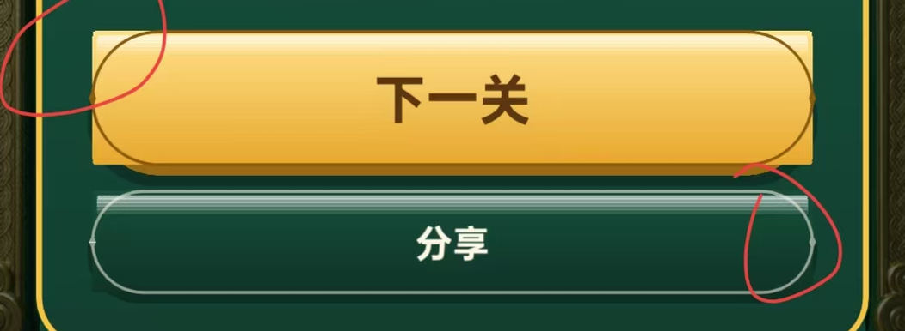
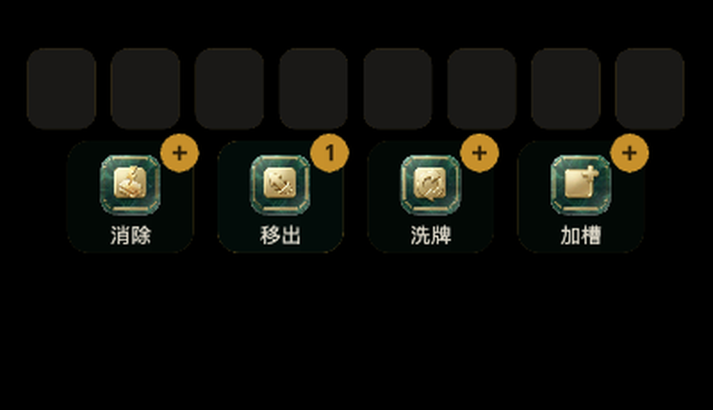
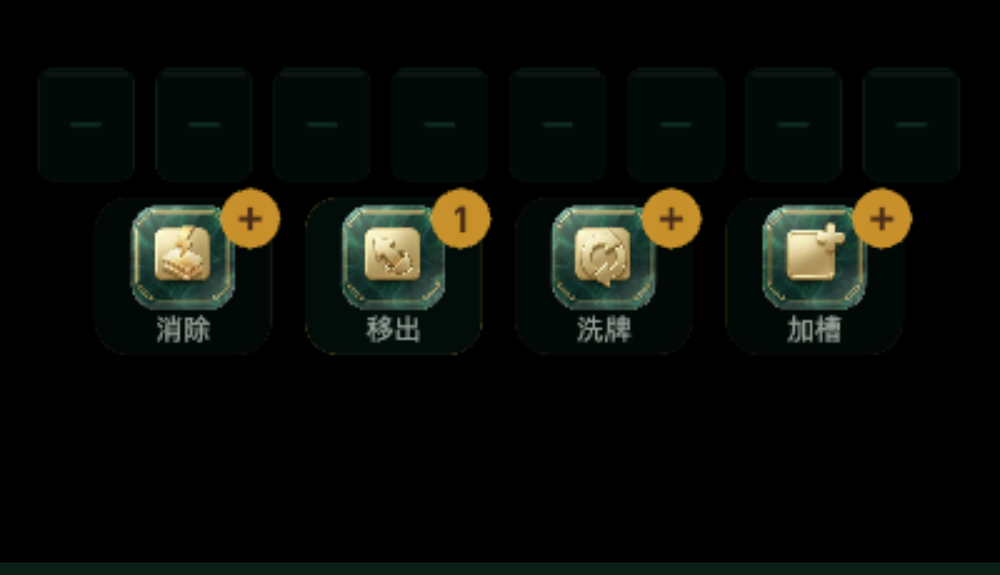

本轮用户拍板 7 项。前 5 项是内容调整（槽位、道具格、进度条、复活文案、按钮等宽）， 第 6、7 项是同一个病：赠礼页「开始挑战」、结算页「下一关 / 分享」的四个角不圆润、 有方块突出来。量完之后发现这不是"圆角调小了"，而是 按钮顶面从头到尾就没画成圆角 —— 下面是证据。
| 判据（同一套量法，同一段脚本） | 改前 | 改后 |
|---|---|---|
| 540x100 金按钮逐行宽度 | 144 行恒为 1052 物理 px，左边界恒为 x=106 | 左缘平滑内缩，唯一值 64 个 |
| 左缘最大内缩 / 半高 | 0.00（=零圆角，直角） | 0.95 / 0.98 / 1.05（1.00 = 正圆胶囊） |
| 顶缘柔光 | 533x16 的圆角矩形，圆角被钳到 1.6px ⇒ 两端戳出按钮之外 | 左右边界直接取外层轮廓 ⇒ 永远填在按钮内 |
| 真机上看到的现象 | 四个角露出方形金块，只有 3px 深棕描边画在真正的胶囊路径上 | 完整胶囊，描边、厚度层、高光三者同心 |
病灶就在 fillVGradient：它把竖向渐变切成 26 条横带，
只给首尾两条传圆角半径 r，中间的传 0。而带子只有 ~4px 高，
roundRectPath 又把超出半高的 r 钳到 min(w,h)/2 = 2px ——
于是 26 条带里 24 条是全宽直角矩形。
// 改前（UIFactory.fillVGradient）
const rr = (i === 0 || i === steps - 1) ? r : 0; // <-- 只有首尾两条有圆角
roundRectPath(g, cx - w / 2, yy, w, h / steps + 0.6, rr); // 且 rr 会被钳到 ~2px
// 改后：每条带都按轮廓函数收窄，渐变严格落在圆角形内部
bandedFill(g, cx, w / 2, cy, cy + halfH, cy - halfH, steps, colorAt,
(d) => shapeInset(d, halfH, r)); // shapeInset = r − √(r²−k²)




| 项 | 改前 | 改后 | 真源（逐值照抄） |
|---|---|---|---|
| 进度条填充 | COLOR.GOLD_HI -> COLOR.GOLD |
实测最亮像素 (82,178,149)；同图金色像素 0 个 |
.progFill 的 linear-gradient(90deg, var(--jade), var(--jade-hi))变量： --jade:#2E8B6F、--jade-hi:#55B79A |
| 槽位空格 | 奶油白底 rgba(255,247,230,.10) + 金线，圆角 16，无中心短横 |
深玉底 rgba(4,20,14,.5) + 玉绿描边 rgba(46,139,111,.30)，圆角 10，中心 22x2 玉绿短横 |
.slot 的 border-radius:10px / 2px solid rgba(46,139,111,.30).slot.empty::after 的 22px x 2px / rgba(46,139,111,.34) |
| 道具格 | 图标 60 · 圆角 22 · 角标 38（字号 22） | 图标 74 · 圆角 24 · 角标 42（字号 25，色 #4A2B18）· 名称 19 号落到格里 37 |
.item img 的 78px x 78px（我方按格高 112 扣掉文字带后取 74）.item .cnt 的 min-width:42px;height:42px;border-radius:21px;font-size:25px |
| 复活徽标 按钮等宽 |
真源写「本局复活 直消 4 张」；次按钮曾 460 宽 | 按用户拍板保持「复活 x1」；主/次按钮等宽 540 | 用户本轮明确拍板，不改真源 |
tsc-check.sh 0 错误（每改一步复验）g5-smoke.mjs 25 / 25 · 未捕获异常 0 · console error 0gameStart / game / result 三页均「无非页面节点越界」Slot 68x80 · Icon 74x74 · Cnt 42x42 · 槽间距 84 = 68+1678-img/after-game.png（即本轮改前状态）。build/web-desktop，无头 Chrome 真机视口 421x927 实拍，走 CDP 真实鼠标点击推动状态。tools/r39-corner.mjs（抓图）+ 内联 Python（量测，见记忆落档）。